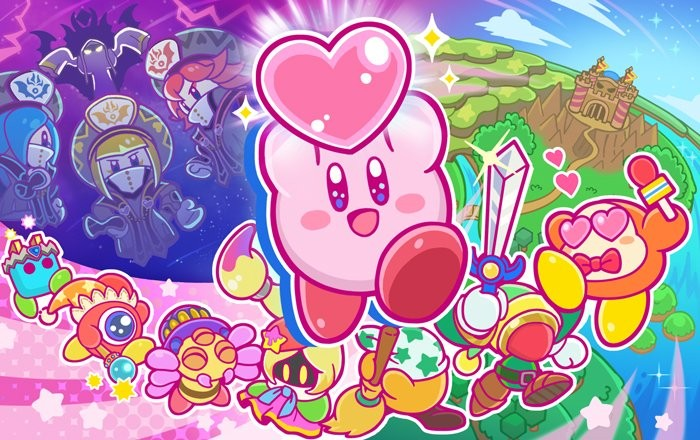

Hello world.
- 개요
- 특징
- 능력
특징

외모
동그라미에~
콩이 두쪽이 나고
주먹밥이 하나
그러면 순식간에
별의 커비!
원래 커비는 게임보이로 나올 한 게임의 테스트용 임시 캐릭터로서 대충 공에 팔다리를 붙여 만들어졌지만, 창조자인 사쿠라이 마사히로를 비롯한 개발진들이 오히려 이러한 단순한 디자인을 마음에 들어하여 그대로 해당 게임의 주인공으로 채택되었다. 색깔이 처음에 확실하게 정해지지 않아 개발진들 사이에서 사쿠라이 마사히로는 분홍색, 미야모토 시게루는 노란색으로 채색할 것으로 의견이 갈렸지만, 사쿠라이의 의견을 따라 분홍색이 되었다는 이야기가 있다. 다만 이는 와전된 설로, 꿈의 샘 이야기 출시 당시의 인터뷰에서 사쿠라이는 커비를 처음부터 분홍색으로 정했다고 하며, 다른 직원들이 커비가 분홍색인 것에 의외라고 놀라워하는 반응을 보였지만, 미야모토 시게루 또한 멋져 보인다고 생각하고 커비가 팩맨 등의 다른 비슷한 외형의 캐릭터들과 달리 노란색이 아니어서 신선하게 느껴졌다고 한다. 그 외로 북미판 별의 커비의 박스아트에서는 어쩐지 흰색으로 나타나기도 했는데, 이는 담당자의 착오로 추정된다.
초기에는 볼에 홍조가 없거나 선으로 데포르메되었으며, 얇은 눈에 얼굴이 몸집이 비해 비교적 작게 묘사됐고, 입가에 볼이 부푼 묘사가 들어가 있어 통통한 느낌이 강했다. 그리고 팔 끝부분이 지금에 비해 좀 더 뾰족했다. 현재의 동그랗고 작은 외형과 눈이 커다란 커비의 모습은 별의 커비 슈퍼 디럭스와 닌텐도 올스타! 대난투 스매시브라더스의 과도기적 모습을 거쳐 별의 커비 64에서 완전하게 정착된 디자인이다. 또한 초기에는 눈을 검은색으로만 칠했으나 슈퍼 디럭스의 아트워크부터 푸른색이 들어가게 되었다. 그리고 별의 커비 디스커버리부터는 커비의 모습의 각도에 따라 주변의 초록색이 눈에 비쳐 보이게 되었다.
몸은 아주 말랑말랑하여 고무풍선처럼 늘어나거나 납작한 모양이 될 수 있는데, 사쿠라이 마사히로의 문답에 따르면 뼈도 이빨도 없다고 한다. 또한 발의 붉은색은 신발이 아니라 진짜 발이 맞다.
커비의 키는 공식적으로 약 20cm 정도나되는 상당히 소형 외계인이다. 그러나 이 키에 대해서 주목해야 할 점은 옆에 '정도'를 뜻하는 'くらい'라고 적어놓았다는 것. 애초에 게임마다 크기가 제각각이고 공기를 빨아들이면 덩치가 수배가 되는 고무공 몸매라서 키가 무의미하기 때문에, 공식적으로도 정도라고 적어놓고 정확하게 확정짓지 않은 것으로 추측된다.
몸무게 또한 불명이지만 몸에 공기를 채워 하늘을 날 수 있다는 점과 스매시브라더스 시리즈에서 가벼운 몸무게로 설정된 점을 보아 상당히 가벼운 것으로 추측된다.
성격
좌우명은 "내일은 내일의 바람이 분다." 순수하고 천진난만한 어린아이같은 성격에, 정의롭고 용감하여 곤란한 모습을 보면 그냥 넘어가지 않고 도와준다. 게임보이용 별의 커비에서 푸푸푸랜드의 모든 음식을 훔쳐간 디디디 대왕을 물리치고 음식을 되찾아 온 이후, 푸푸푸랜드와 팝스타, 그리고 온 우주의 위기를 몇 번이고 구했다.
다만 앞 뒤 안 가리는 단순한 면이 있는데, 예를 들어 별의 커비 도팡 일당의 습격에서 간식으로 먹으려던 케이크가 없어지자, 전과가 있는 디디디 대왕의 짓이라고 생각하고 찾아가서 아무 짓도 안한 디디디 대왕을 두들겨 패버렸다. 또한 이런 순박한 성격을 역으로 이용당해 의도치 않게 악역의 목적을 돕고 배신당하기도 한다. 하지만 이들은 모두 순진한 커비가 다른 위협의 존재나 정확한 상황에 대해서 아무것도 모르고 있었음을 감안해야 한다. 그리고 결국엔 본인 때문에 수틀린 상황을 전부 해결하고 세상을 구하니 그야말로 주인공답다.
앞서 말했듯 성격은 꽤나 단순하기에 자신에게 맞서거나 적으로 판단되는 자와는 일체의 망설임 없이 싸운다. 설령 그 상대가 디디디 대왕, 메타 나이트처럼 한때 아군이었을지라도. 반대로 한때 적이었던 자여도 자신을 돕거나 화해의 여지를 보인다면 뒤끝 없이 받아주는 모습을 보인다. 또한 적일지라도 상대가 약한 모습을 보여주면 도와주려는 모습도 가끔 보인다. 초대작의 엑스트라 모드의 엔딩에서 디디디 대왕이 쓰러져있자 흔들어 깨운 뒤 디디디가 울며 풀이 죽은 채 쓸쓸히 걸어가자 뒤따라가고, 로보보 플래닛에서 수지가 또 다른 적의 공격을 맞은 채 쓰러지자 무사한지 확인하기도 한다.
이러한 모습들을 통해 커비가 단순하면서도 뒤끝없는 대인배스러운 성격임을 알 수 있다.
설정
굉장한 먹보. 게임에서 등장하는 아이템도, 심지어는 맵의 이름까지도 대부분 먹을 것들 투성이다. 좋아하는 음식은 맥시멈 토마토. 이 맥시멈 토마토는 게임 상에서 체력을 전부 회복시켜 주는 아이템으로 등장한다. 스매시브라더스 시리즈에서는 데미지 퍼센트를 50% 회복시키는 음식으로 등장. 그리고 쓰러졌을 때 자동 회복하는 황금 토마토도 있다.
케이크도 좋아하는지 케이크가 이야기의 발단이 된 게임이 2개가 있다. 첫 번째는 별의 커비 도팡 일당의 습격으로, 커비가 간식으로 딸기 케이크를 먹으려고 했는데 누군가에게 도둑맞고, 곧바로 디디디 대왕의 소행을 의심해서 디디디 성으로 향하는 것으로 이야기가 시작된다. 두 번째는 외전작인 커비 배틀 디럭스!. 디디디 그랑프리의 우승 상품이 '디럭스 산더미 케이크'임을 알게 되자 케이크를 쟁취하기 위해 커비가 대회에 참가하게 된다. 추가로 별의 커비 64의 컷신에서도 커비가 딸기 케이크를 먹는 장면이 나온다.
취미는 이곳저곳 돌아다니면서 낮잠을 자거나, 음식을 먹거나, 워프스타를 타고 놀거나, 낚시를 하면서 느긋하게 시간을 보낸다. 음악 듣기를 좋아하여 게임 내의 사운드 테스트 룸에서 헤드셋을 끼고 음악을 감상하는 커비를 볼 수 있다. 노래부르기 또한 좋아하지만, 마이크 능력의 효과에서 알 수 있듯이 무시무시한 음치이다.